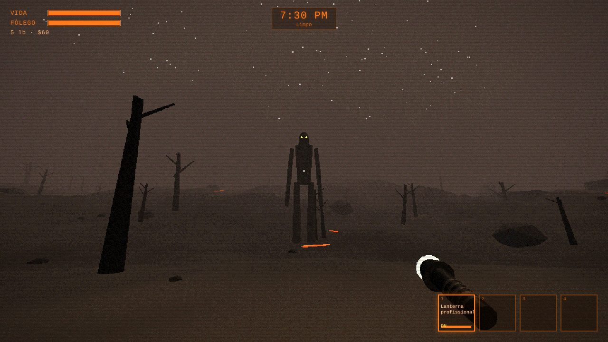
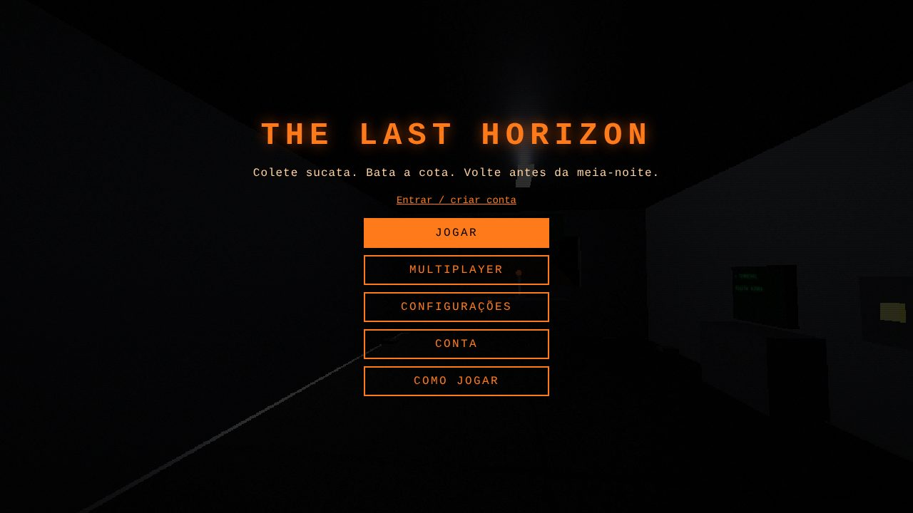

Co-op até 4
Um cria a sala, passa o código e os amigos entram direto na nave.
Terror cooperativo · Exploração espacial
Colete sucata. Bata a cota. Volte antes da meia-noite.
Você trabalha para a Empresa. Pouse em luas abandonadas, entre em instalações escuras, recolha o que tiver valor e volte para a nave antes que algo te encontre. Sozinho ou com até 3 amigos.

No terminal da nave, defina a rota e compre equipamento: lanterna, pá, spray, kit médico...
Corredores escuros, portas trancadas, armadilhas e criaturas que não querem visita.
Largue tudo dentro da nave. À meia-noite ela decola sozinha, com ou sem você.
Venda no 71-Posto. Se não alcançar a cota no prazo, a Empresa te demite.
Um cria a sala, passa o código e os amigos entram direto na nave.
Só quem está perto te escuta. E as criaturas também.
Botões de toque ajustáveis, teclas configuráveis e suporte a controle.
Deserto, cinzas, floresta, cânion industrial, nevasca, abismo e o posto da Empresa.
Cada uma com um jeito diferente de caçar. Escaneie para aprender no bestiário.
3 saves por conta. O jogo salva sempre que a nave volta para a órbita.
A nave decola à meia-noite.
▶ COMEÇAR TURNO Roda direto no navegador. Não precisa instalar nada.THE LAST HORIZON é um jogo cooperativo de terror e exploração planetária. A tripulação trabalha para a Empresa, uma corporação que cobra uma cota de sucata a cada três dias. Para pagar, é preciso pousar em luas abandonadas, explorar instalações escuras e voltar vivo com os objetos de valor.
Cada lua tem clima, terreno e perigos diferentes. Dentro das instalações há portas trancadas, torretas, minas e criaturas que caçam pelo som, pela visão ou esperam no teto. Do lado de fora, quando a noite chega, coisas maiores aparecem.
O jogo foi desenvolvido para a disciplina de Programação III do Curso Técnico Integrado ao Ensino Médio em Desenvolvimento de Sistemas do IF-SC. A inspiração é o jogo Lethal Company: a ideia foi recriar as mecânicas principais (cota, luas, criaturas, armadilhas e co-op) com cenários e criaturas próprios.
Todos os sons do jogo são sintetizados por código e as fases são geradas proceduralmente: cada pouso cria uma instalação diferente.

Aperte JOGAR, crie uma conta (pode ser só neste aparelho) e escolha um save. Na nave, use o terminal para escolher a lua e puxe a alavanca para pousar.
| W A S D | andar |
| Shift | correr |
| Ctrl | agachar |
| Espaço | pular |
| E | pegar / interagir |
| G | largar item |
| Clique esq. | usar item |
| Clique dir. | escanear |
| F | lanterna |
| 1 a 4 | trocar item |
| T | chat |
| V (segurar) | falar |
Todas as teclas podem ser trocadas em Configurações → Teclado.
Deite o celular. O lado esquerdo da tela é o joystick e o direito serve para olhar.
Os botões (USAR, E, PULAR, SCAN...) podem ser movidos e redimensionados em Configurações → Toque → Editar posição dos botões.
No multiplayer aparecem os botões 💬 (chat) e 🎙 (segure para falar).
Conecte um controle de Xbox ou PlayStation (USB ou Bluetooth) e aperte qualquer botão.
Analógico esquerdo anda, direito olha. Os botões podem ser trocados em Configurações → Controle.
K7P2X) e um link de convite. Mande para os amigos.O chat de voz usa o microfone: na primeira vez o navegador pergunta se pode usar. Você só ouve quem está perto. Falar faz barulho e atrai criaturas.
Use o comando ROTA [lua] no terminal da nave. As luas mais perigosas custam créditos.
Deserto enferrujado e quente. Pouca sucata, poucas ameaças. Bom pra começar.
GrátisMorros de cinza vulcânica. Um verme enorme vive sob a superfície.
GrátisFloresta úmida e enevoada. Colossos caminham entre as árvores durante o dia.
GrátisCânion industrial abandonado, com tanques de combustível e uma fábrica enorme.
GrátisPlanície congelada sob nevasca. Uma mansão antiga cheia de objetos caros... e coisas famintas.
$550Uma lua vermelha onde o sol quase não aparece. A instalação é gigantesca e ninguém volta igual.
$700O posto da Empresa. Venda sua sucata no balcão. Não há perigo aqui... provavelmente.
GrátisOs registros completos aparecem no terminal depois que você escaneia a criatura.
Besouro que guarda um ninho de sucata. Pegue algo dele e ele ataca.
Larva que espera no teto e cai na cabeça de quem passa.
Aranha enorme. Se você tocar numa teia, ela sabe onde você está.
Te segue pelas costas. Olhe para ele e ele recua; encare demais e ele fica furioso.
Só se move quando ninguém está olhando.
Rápido em linha reta, péssimo nas curvas.
Poça viva que se arrasta devagar. Só não fique parado.
Aparece sempre um pouco atrás de você. Quando a melodia acaba...
Robô armado. Não se mexa enquanto o sensor vermelho estiver aceso.
Parece um tripulante. O visor é vazio por dentro.
Imita sucata valiosa. Valor bom demais pra ser verdade.
Cão cego que caça pelo som. Ande agachado perto deles.
Quase quinze metros de altura. Se te vir, te persegue.
O chão treme antes do ataque. Corra.
Desenvolvedor: Vinicius Arthur Batista Cuchi
Escola: IF-SC — Curso Técnico Integrado ao Ensino Médio em Desenvolvimento de Sistemas
Disciplina: Programação III
Professora: Lara Popov Zambiasi Bazzi Oberderfer
Conte o que aconteceu, em qual aparelho (PC ou celular) e em qual lua. Se der, mande um print.